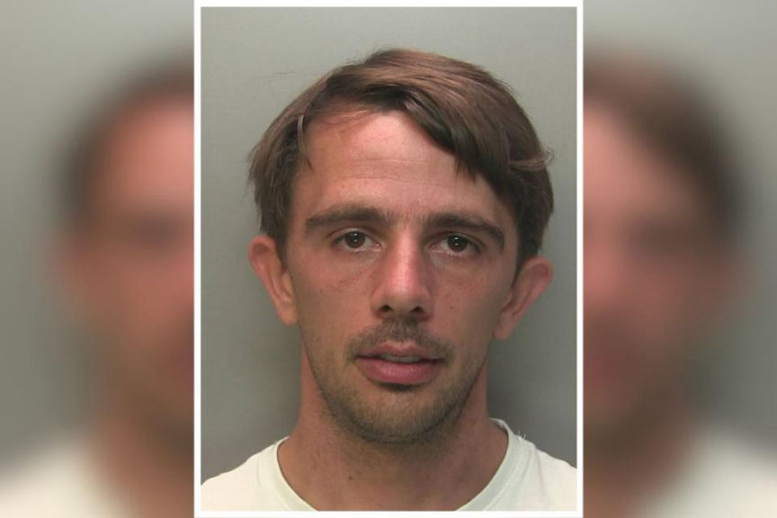
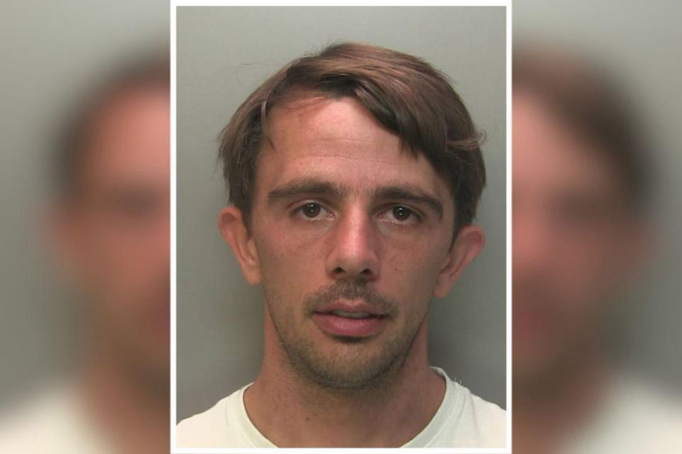

UK Dark Web Drug Dealers Sentenced
~2 min read | Published on 2023-07-30, tagged Darkweb-Vendor, Sentenced using 353 words.
A dark web drug trafficking ring whose leader was busted after his landlord found his plans to create a drug trafficking empire written on an envelope in his house has been sentenced.

According to the Surrey police, the drug trafficking conspiracy was launched in 2019 by 35-year-old James Buckett. Buckett operated an undisclosed dark web drugs vendor profile through which he distributed cocaine, LSD, cannabis, and pharmaceutical drugs worldwide.
Buckett's drug trafficking operation was discovered in February 2019 after Border Force officers at Heathrow Airport intercepted a suspicious package sent to him from the Netherlands. On opening the package the officers found 60.4 grams of MDMA.
The investigators established that Buckett acquired the drugs from other dark web vendors and had them mailed to the homes of his accomplices. After receiving the drug packages, 28-year-old Alfie Petherick packaged the drugs according to quantities ordered by their buyers and mail them to the buyers.
Craig Norton, 32, acted as a drug runner for hire. He delivered drug packages to their buyers.
In June 2019, Buckett failed to pay rent and his landlord got into the flat forcefully. The landlord reportedly found drugs and drug paraphernalia. He also found that Buckett kept handwritten notes of how he would set up a drug trafficking empire.
The ivestigators arrested Buckett on July 29, 2020, on a boat he had turned into the center of his drug trafficking operation. Norton and Petherick were arrested the next day.
The fourth defendant in the case, 32-year-old Joseph Strachan was arrested on August 13, 2020, after the investigators established that Buckett had purchased the vendor account from him.
Strachan was found guilty of conspiracy to supply cocaine and diazepam and was sentenced to two years in prison suspended for two years.
Norton pleaded guilty to conspiring in the distribution of cocaine and was sentenced to two years and six months in prison.
Petherick pleaded guilty to conspiring in the distribution of MDMA, cocaine, cannabis, and diazepam. He was sentenced to four and a half years behind bars.
Buckett pleaded guilty to conspiring in the distribution of MDMA, cocaine, cannabis, and diazepam. He was sentenced to nine years in prison.

James Buckett
According to the Surrey police, the drug trafficking conspiracy was launched in 2019 by 35-year-old James Buckett. Buckett operated an undisclosed dark web drugs vendor profile through which he distributed cocaine, LSD, cannabis, and pharmaceutical drugs worldwide.
Buckett's drug trafficking operation was discovered in February 2019 after Border Force officers at Heathrow Airport intercepted a suspicious package sent to him from the Netherlands. On opening the package the officers found 60.4 grams of MDMA.
The investigators established that Buckett acquired the drugs from other dark web vendors and had them mailed to the homes of his accomplices. After receiving the drug packages, 28-year-old Alfie Petherick packaged the drugs according to quantities ordered by their buyers and mail them to the buyers.
Craig Norton, 32, acted as a drug runner for hire. He delivered drug packages to their buyers.
In June 2019, Buckett failed to pay rent and his landlord got into the flat forcefully. The landlord reportedly found drugs and drug paraphernalia. He also found that Buckett kept handwritten notes of how he would set up a drug trafficking empire.
The ivestigators arrested Buckett on July 29, 2020, on a boat he had turned into the center of his drug trafficking operation. Norton and Petherick were arrested the next day.
The fourth defendant in the case, 32-year-old Joseph Strachan was arrested on August 13, 2020, after the investigators established that Buckett had purchased the vendor account from him.
Strachan was found guilty of conspiracy to supply cocaine and diazepam and was sentenced to two years in prison suspended for two years.
Norton pleaded guilty to conspiring in the distribution of cocaine and was sentenced to two years and six months in prison.
Petherick pleaded guilty to conspiring in the distribution of MDMA, cocaine, cannabis, and diazepam. He was sentenced to four and a half years behind bars.
Buckett pleaded guilty to conspiring in the distribution of MDMA, cocaine, cannabis, and diazepam. He was sentenced to nine years in prison.